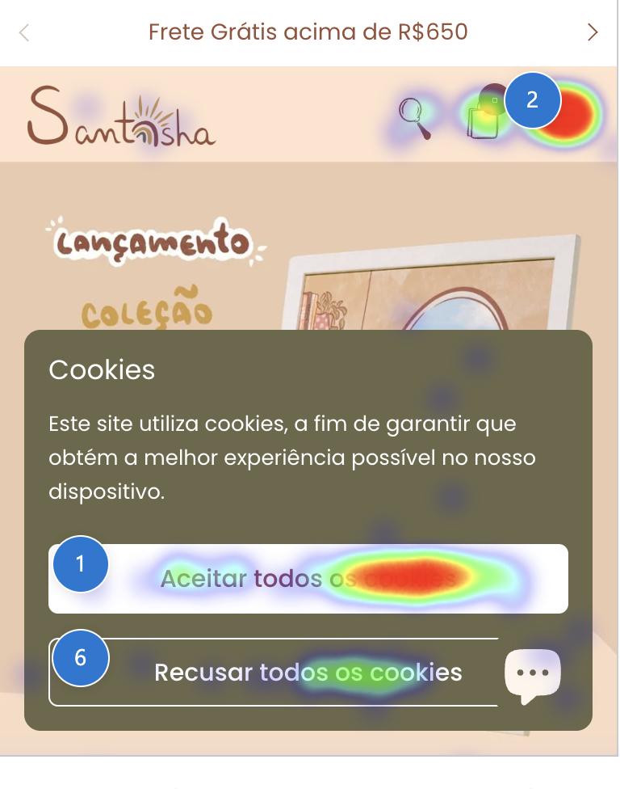
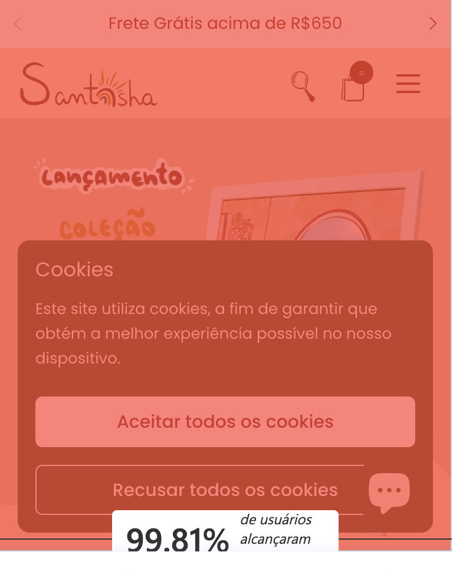
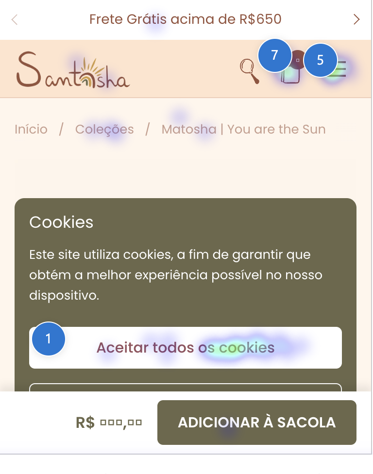

Como as pessoas realmente navegam, param e desistem no santoshaporai.com.br — sessões, funil, fricção e performance.
Janela de 30 dias · coleta ativa até ~23/07/2026 · projeto Clarity xi8jceh6i2
!
Atenção: o Clarity parou de coletar dados em ~23/07/2026 — causa identificada
Todos os números deste relatório são reais, mas são uma foto até 23/07 — não do site de hoje. A queda é abrupta e não é sazonalidade:
799 sessões nos 17 dias anteriores contra 10 nos últimos 14 dias e 0 nos últimos 3.
Causa: o app embed do Microsoft Clarity está desligado no tema. O app segue instalado e o pixel
aparece como conectado no painel da Shopify — mas quem grava sessão e monta mapa de calor é o app embed, e ele não está ativo.
Confirmado por dois caminhos: a Shopify reporta "Extensões: 0 ativas" no app, e o HTML da loja ao vivo não tem
nenhuma ocorrência de clarity.ms (só o registro do pixel em webPixelsConfigList).
Correção (1 minuto, não altera a aparência do site): Loja virtual → Temas → tema ativo → Personalizar →
ícone 🧩 Configurações do app → ligar Microsoft Clarity → Salvar. Os dados de 23/07 até a religação não são recuperáveis.
Enquanto isso, nenhuma das melhorias abaixo é mensurável.
1Panorama de 30 dias
Volume de tráfego e profundidade de engajamento (bots já excluídos).
8.474
Sessões válidas (6.829 usuários únicos)
1,70
Páginas por sessão — navegação rasa
Baixo
39,3%
Profundidade de rolagem média
Atenção
31s
Tempo ativo por sessão (de 1,3 min total)
Baixo
Tráfego alto e saudável em volume, mas engajamento raso: em média a pessoa vê menos de 2 páginas, rola só 39% da tela e passa
31 segundos ativos. É o padrão de um público mobile vindo de rede social — chega, dá uma olhada rápida e sai. O trabalho não é
trazer mais gente, é segurar quem chega e encurtar o caminho até a compra.
2De onde vêm e como acessam
A origem e o navegador mudam tudo — o público é quase todo mobile e in-app.
Origem do tráfego
Referenciador · sessões nos últimos 30 dias
Instagram orgânico + anúncios
2.062
Google (busca) google.com + app Android
1.835
Linktr.ee link da bio
302
Pinterest app + web
296
Além de 3.477 sessões internas (navegação entre páginas do próprio site). Instagram é a maior fonte externa.
Navegador de acesso
~89% mobile — o navegador do Instagram sozinho é quase metade
Navegador do Instagram in-app (iOS/Android)
46,1%
Chrome Mobile
21,7%
Safari Mobile
18,7%
Chrome Desktop
6,9%
Samsung Internet + outros
6,6%
Quase metade das sessões acontece dentro do navegador do Instagram. Esse navegador embutido é limitado:
autofill falha, carteiras (Apple/Google Pay) e alguns scripts de pagamento não funcionam bem, e o carregamento é mais lento.
Otimizar a experiência para o in-app do Instagram — e incentivar "abrir no navegador" no checkout — tem impacto direto na conversão.
3Funil de compra
Do produto ao checkout — onde o dinheiro escorre (eventos capturados pelo Clarity).
Visualizou produtoevento "Produto"
1.420
100%
↓ só 17 em cada 100 colocam na sacola
Adicionou ao carrinhoevento "ao carrinho"
242
17,0%
↓ 53 removeram itens da sacola
Iniciou checkoutevento "Finalizar compra"
44
3,1%
A maior perda está entre carrinho → checkout: de 242 sacolas, só 44 chegam a finalizar (≈18%). Some a isso 53 remoções de carrinho.
Isso reforça o diagnóstico anterior — o gargalo é o checkout, agravado pelo tráfego in-app. Falta de Pix/parcelamento visível na
página de produto e o atrito do webview do Instagram explicam boa parte dessa evaporação.
4Quem coloca na sacola e não volta
O mesmo caminho, agora medido em sequência — e o mapa de calor filtrado só em quem abandonou.
Viu produto1ª etapa da jornada
1.318
100%
↓ 1.179 saem sem colocar nada na sacola
Adicionou à sacolana mesma sessão, depois de ver o produto
139
10,6%
↓ 129 param aqui e não voltam
Clicou em finalizar compraúltimo ponto que conseguimos enxergar
10
0,8%
92,8%
De cada 100 sacolas montadas, ~93 nunca chegam ao checkout. Esse é o ponto exato onde o cliente para e não volta —
não é na entrada do site, nem na escolha do produto. Quem chega a montar a sacola já decidiu comprar; a perda acontece
entre a sacola e o pagamento. Conversão ponta a ponta: 0,76%. Quem compra leva em média 3,6 minutos.
Por que estes números são menores que os da seção 3: lá cada evento é contado isoladamente no período.
Aqui exigimos as três etapas na ordem e na mesma sessão — é a leitura mais dura e mais fiel de jornada real de compra.
Ícone da sacola no topo abrem a gaveta, olham e saem
7
Botão de checkout na gaveta clicam — e mesmo assim não avançam
5
Popup de brinde (Avada) 4 no botão + 3 no "fechar"
7
Seletores de tamanho swatches
7
"Fechar" a gaveta da sacola desistência explícita
3
Até onde eles rolam antes de desistir
Mapa de rolagem do mesmo grupo · página de produto
10% da página
100%
15% da página
82%
20% da página
74%
25% da página
44%
40% da página
24%
O precipício está entre 20% e 25% da página: cai de 74% para 44% num só passo.
Tudo que estiver depois disso (reviews, garantias, prova social) praticamente não existe para quem abandona.
Investigar
Eles clicam em "finalizar compra" — e o checkout não acontece
Dentro desse grupo que nunca registrou início de checkout, o botão de finalizar compra da gaveta aparece como o
2º elemento mais tocado. Ou seja: a pessoa clica e, aparentemente, nada avança. Pode ser falha do botão na gaveta,
pode ser o evento que não registra — é hipótese, não conclusão. Confirmar assistindo às gravações dessas sessões é a
próxima ação de maior retorno de todo o relatório.
5 toques (6,41%) no botão de checkout, em sessões que o funil marca como "não chegou ao checkout"
Atenção
O popup de brinde compete com a compra
O popup do app Avada Gift Campaign concentra 7 dos 78 toques (9%) desse grupo — e quase metade desses toques
é para fechar o popup. Ele está disputando atenção exatamente no momento da decisão, na página de produto.
4 toques no botão do popup · 3 toques no "fechar"
Estrutural
Não existe página de carrinho — e o checkout é uma caixa-preta
A loja usa gaveta lateral em vez de página /cart, então todo o abandono acontece na própria página de produto
(por isso o mapa de calor acima é dela). E o checkout hospedado da Shopify o Clarity não consegue gravar — não existe evento de
Compra no projeto. Nosso rastro termina na porta do checkout; dali pra frente, só o Shopify enxerga.
Sem página /cart · sem evento de Compra no Clarity
5O que as pessoas mais olham
Páginas e produtos que concentram a atenção — onde vale investir em conversão.
Páginas mais vistas
Visualizações · 30 dias
Home
1.196
Coleção · Tapetes (mats)
993
Coleção · Tapetes (mats-1)
847
Coleção · Baralhos
755
Produto · Pôster Ashtanga Yoga
674
Coleção · Acessórios
450
Produtos mais populares
Interações · 30 dias
Pôster Ashtanga Yoga · A2
801
Cartasflow
511
Matosha · You are the Sun
381
Matosha · Guia Lunar
314
Pôster Surya Namaskar · A3
289
Matosha · Yoginis
288
As coleções de tapetes puxam a maior parte do interesse e os pôsteres (Ashtanga A2, Surya Namaskar A3) e as
cartas (Cartasflow / Matosha) são os produtos-estrela. São essas páginas que merecem prioridade em prova social, Pix visível e CTA forte.
6Mapas de calor (mobile)
Onde os dedos realmente tocam — capturado do Clarity na visão de celular (89% do tráfego).
Home · toque
1.036 páginas · 1.443 toques

+ tocado− tocado
Home · rolagem
Vermelho = quase todo mundo chega ali

99,8% aquirola menos
Produto · toque
331 páginas · 317 toques (Matosha)

+ tocado− tocado
Crítico
O banner de cookies rouba o primeiro toque de todo mundo
Nos três mapas, o ponto mais quente é o botão "Aceitar todos os cookies" — na Home e na página de produto ele é o
clique nº 1. O aviso abre grande, no meio da tela, e cobre o hero e o produto logo na entrada. É a primeira coisa com que a
pessoa precisa lidar antes de ver a oferta, e some do foco quem chega de anúncio.
Home: 171 toques (11,9%) em "Aceitar" · Produto: 27 toques (8,5%), o mais clicado da página
Atenção
A rolagem morre logo depois da primeira dobra
O mapa de rolagem da Home mostra 99,8% vendo o topo, mas a barra despenca já entre 10% e 15% da página — quando
aparece o corte do "lançamento". Conteúdo importante mais abaixo (coleções, prova social) é visto por menos da metade.
Home: 99,8% aos 10% → 63% aos 15% → ~26% aos 40% da página
Positivo
Na página de produto, o dedo vai para tamanho e sacola
Fora o cookie, os toques quentes no produto são os seletores de tamanho (swatches) e o botão fixo
"Adicionar à sacola". A intenção de compra está lá — é o caminho até o checkout que precisa ficar mais leve.
Swatches de tamanho: 2º, 3º e 4º elementos mais tocados
As capturas mostram o banner de "Frete Grátis acima de R$650" (histórico do período); ao vivo já está em R$350.
7Sinais de fricção
Onde o Clarity flagra irritação, cliques perdidos e desistência rápida.
12,98%
Retornos rápidos (1.100 sessões saem e voltam)
Alto
3,39%
Cliques mortos (287 sessões clicam em nada)
Atenção
0,04%
Cliques de raiva (rage clicks — só 3 sessões)
Ótimo
0%
Rolagem excessiva (sem busca frustrada)
Ótimo
Atenção
Cliques mortos: interatividade que o cliente espera e não existe
287 sessões clicaram em algo que não responde — tipicamente descrições, medidas e specs do produto que parecem
acordeões/abas mas são texto estático. Correção fácil e de bom retorno.
3,39% das sessões · concentrado nas páginas de produto
Crítico
13% entram e saem rápido (quick-back)
1.100 sessões voltam para a origem quase na hora. Combinado com 1,70 pág/sessão e rolagem de 39%, indica que a
primeira dobra não entrega a promessa do anúncio rápido o bastante — ou a página demora a carregar no in-app.
12,98% das sessões · maior em tráfego de Instagram/mobile
Positivo
Sem raiva e sem busca frustrada
Rage clicks em 0,04% e rolagem excessiva em 0%. O site não gera irritação aguda nem faz a pessoa "caçar" o conteúdo —
a fricção é de conversão/velocidade, não de usabilidade quebrada.
Rage 3 sessões · rolagem excessiva 0 sessões
8O agente de chat
O widget de conversa aparece em quase toda sessão — mas quase ninguém fala com ele.
Exposição vs. uso
Eventos do agente · 30 dias
Agente ativo (carregado)
6.428
Bolha exibida
5.927
Nudge exibido
1.958
Conversa iniciada
43
Mensagem do usuário
40
Leitura
A bolha do chat aparece em ~5.900 sessões, mas só 43 viram conversa (0,7%). O widget está mais
ocupando tela em mobile do que gerando contato.
Vale testar: reduzir a intrusão em mobile (bolha menor / nudge menos agressivo) ou reposicioná-la para
não competir com o CTA "Adicionar à sacola", que é o clique nº 1 na página de produto.
9Velocidade e estabilidade (Core Web Vitals)
Nota geral 74/100 sobre 788 páginas medidas — todos os três indicadores no amarelo.
LCP · Carregamento
3,2s
Ideal ≤ 2,5s · precisa de melhorias
INP · Resposta ao toque
290ms
Ideal ≤ 200ms · precisa de melhorias
CLS · Estabilidade visual
0,16
Ideal ≤ 0,1 · layout ainda "pula"
Erros de JavaScript — 14,9% das sessões (leitura técnica)
Dos 2.881 erros, a maioria é ruído de webview do Instagram/iOS, não bug do site:
window.webkit.messageHandlers (13%) e _autofillCallbackHandler (11%) vêm do autofill do navegador embutido.
Vale investigar só o this.parentNode.classList = null (49%), que pode ser um script de tema disparando cedo demais.
10O que fazer com isso
Ações priorizadas por impacto na conversão × esforço.
Ação nº 0 — sem isso, nada é mensurável
0
Religar a coleta do Clarity
Ligar o app embed do Microsoft Clarity no tema: Loja virtual → Temas → Personalizar → 🧩 Configurações do app → Microsoft Clarity → Salvar. Parado desde ~23/07 — hoje o site voa às cegas e nenhuma melhoria abaixo poderá ser comprovada.
BloqueadorBaixo esforço
0b
Assistir às gravações do checkout
Ver as sessões em que a pessoa clica no botão de finalizar compra da gaveta e não avança. Confirma (ou derruba) a hipótese de botão/checkout quebrado — maior retorno potencial do relatório.
Alto impactoBaixo esforço
Rápido & alto impacto
1
Enxugar o banner de cookies
Transformar em barra discreta no rodapé (não modal no centro) — hoje é o clique nº1 e cobre o hero/produto na entrada. Ganho imediato de foco na oferta.
Alto impactoBaixo esforço
2
Pix e parcelamento na página de produto
Selo de Pix e "em até Nx" visível acima da dobra — o público in-app precisa ver a facilidade de pagamento antes de decidir.
Alto impactoBaixo esforço
3
Ativar as descrições/medidas
Transformar as specs em acordeões reais — elimina os cliques mortos e melhora a leitura no celular.
Médio impactoBaixo esforço
4
Aliviar o chat em mobile
Bolha menor / nudge menos agressivo pra não brigar com o "Adicionar à sacola".
Médio impactoBaixo esforço
5
Rever o popup de brinde (Avada)
Ele leva 9% dos toques de quem abandona — e metade é pra fechar. Tirar da página de produto ou atrasar o disparo pra depois da decisão.
Médio impactoBaixo esforço
6
Subir a prova de compra pra antes de 25% da página
Frete, Pix, garantia e reviews precisam estar acima do precipício de rolagem — quem abandona nunca passa de 25% da página de produto.
Alto impactoBaixo esforço
Estrutural
7
Otimizar checkout para in-app
Reduzir o atrito de finalizar dentro do Instagram — incentivar "abrir no navegador", habilitar carteiras onde der. É onde mais se perde (18% do carrinho fecha).
Alto impactoMédio esforço
8
Acelerar a primeira dobra
Atacar LCP 3,2s e CLS 0,16 (imagem hero, fontes, reserva de espaço) pra cortar os 13% de quick-back.
Alto impactoMédio esforço
9
Prova social nos best-sellers
Reviews e "mais vendido" nos pôsteres e cartas Matosha/Cartasflow, que já concentram o interesse.